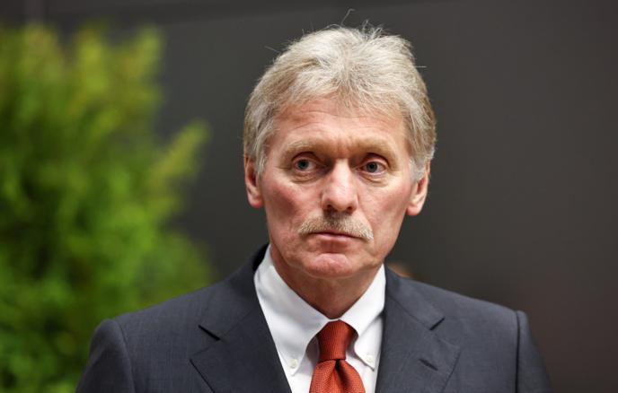

Голос президента. Ложь с трибуны.

Дмитрий Песков — человек, чья работа состоит в том, чтобы Путин никогда не был виновен ни в чём. За двадцать лет он отработал технику официального отрицания до совершенства: войска у границы — «учения», сбитый самолёт — «провокация», вторжение — «специальная военная операция».
Родился в семье дипломата. Окончил МГИМО по специальности «востоковедение». Свободно владеет турецким и английским. Карьера в МИД начинается в Турции.
Работает в посольстве России в Анкаре. Встречается с Путиным, тогда ещё директором ФСБ. Быстро становится частью его ближайшего окружения.
Переходит в пресс-службу Путина с первых месяцев его президентства. Осваивает роль официального посредника между Кремлём и мировыми СМИ.
Назначается официальным пресс-секретарём Президента. С этого момента — ежедневный голос Кремля для мировых журналистов. Регулярно отрицает то, что снято на камеру. Факт
Называет полномасштабное вторжение в Украину «специальной военной операцией», отрицает удары по мирным объектам, опровергает задокументированные военные преступления. ЕС, Великобритания, Канада и Австралия вводят персональные санкции. Факт Интерпр.
Метод Пескова — системное отрицание. Он не защищает конкретные факты, он создаёт атмосферу, в которой любой факт становится спорным. Отрицание войск в Крыму в 2014-м, отрицание MH17, отрицание Бучи — каждый раз одна и та же техника: «Это провокация», «Это фейк», «Это западная пропаганда». Главная цель — не убедить Запад, а создать у российской аудитории ощущение, что правды не существует. Интерпр.
Персональные санкции ЕС с 2022 года — за активное участие в пропагандистском обосновании вторжения. Факт Великобритания, Канада и Австралия ввели аналогичные ограничения. Активы заморожены, въезд в ЕС и Великобританию запрещён.
Все утверждения в данном досье основаны на открытых публичных источниках. Факты, отмеченные Факт, имеют прямые первичные источники. Отмеченные Интерпр. — авторская интерпретация задокументированных событий.